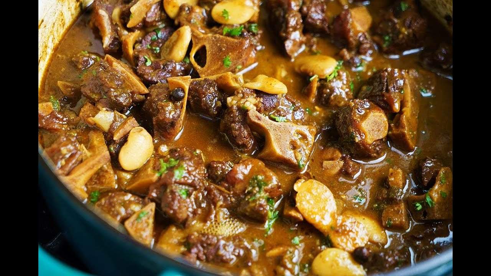

Braised Oxtail

Intro
This is one of my favorite comfort foods. Braised oxtail makes for a hearty slow-cooked dish that clings to your bones during those cold winter days. Be sure to start this recipe early as it takes a long time to cook but it is always worth the wait!. This dish goes really well with rice or mashed potatoes but is also delicious just on its own.
Ingredients
- 5lbs Bone in Oxtail
- 1/4 cup of red wine
- 1 can of Butter beans (can add another if you'd like)
- 2 Bay leaves
- 3 Sprigs of Fresh Thyme
- 2 Quarts of beef stock
- Salt and pepper to taste
Directions
- In a large thick-bottom pot sear off your oxtails making sure not to crowd the pan.
- Once they are all browned on all sides remove from the pan and add in your wine, deglazing the pan and scraping off the fond.
- Add in bay leaves, thyme. Add stock until it rises up the oxtail halfway, and bring to a simmer
- Once simmering taste and adjust seasoning with salt and pepper
- Cook for 1 hr on low heat covered
- Drain and rinse beans before adding to braising liquid and continue simmering until meat is fork tender.